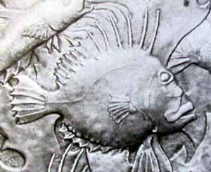

Penlee House Art Gallery
This Public Gallery and Museum in Penzance is a centre of expertise and leadership in the conservation and display of original pieces from the Newlyn Arts and Crafts movement. As well as being the source of energy in the organisation of exhibitions on the Newlyn School of Painters, museum staff have also considerable knowledge and expertise in Newlyn Copper and artefacts from the Newlyn School. The Museum is the guardian of a very important collection of Newlyn copper, including spectacular pieces by John Mackenzie and by John Pearson and there are plans to make photographs of the collection available on the CHAIN website organised by Museums in Cornwall. The museum also has examples of Hale copper, and other items from the Newlyn School which include Enamel and Crysede silk.
Newlyn Art Gallery

If you drive from Penzance to Newlyn make sure you look left to see the Newlyn Art Gallery originally named the Passmore Edwards Gallery. This gallery holds the most remarkable pieces of Newlyn work which are on show to the public these are the four copper plaques mounted in the external wall. Facing the road from Penzance to Newlyn . The Plaques, designed by J.D. Mackenzie and made by Philip Hodder in 1895 depicting Earth Air Fire and Water must surely be amongst the largest pieces of work to have been made. It is rather sad to see the finer details of their beauty has been lost somewhat due to their exposure to the weather, but efforts are being made to establish how they may be preserved.

Newlyn Contacts.
Penlee House Gallery and Museum, Morrab Road, Penzance, Cornwall TR 18 4HE. 44(0)1736 363625 www.penleehouse.org.ukk
Newlyn Reading
Newlyn Copper Arts and Crafts Copperwork in Newlyn. Daryl Bennett and Colin Pill 2008 Sansom
Cornish Art Metalwork. Colin Pill 2012. Sansom
Arts and Crafts in Newlyn. 1890 to 1930. Hazel Berriman. Published by Newlyn Orion. Newlyn Art Gallery. Penzance. Currently out of print.
Newlyn Copper. John Curnow Laity. Catalogue to accompany Newlyn Exhibition at Penlee House. 1986. Published Morrab Studio 1998 2nd Ed.
Never Sit Idle. Charles Eustace and his brother John. Neglected Cornish Copper Craftsmen. David Kirk and Tony Sanders. Produced by Tony Sanders Penzance Gallery copies available
See also item on Newlyn in by Jude Clarke in Collector Cafe www.collectorcafe.com/article_archive_list.asp?article=410